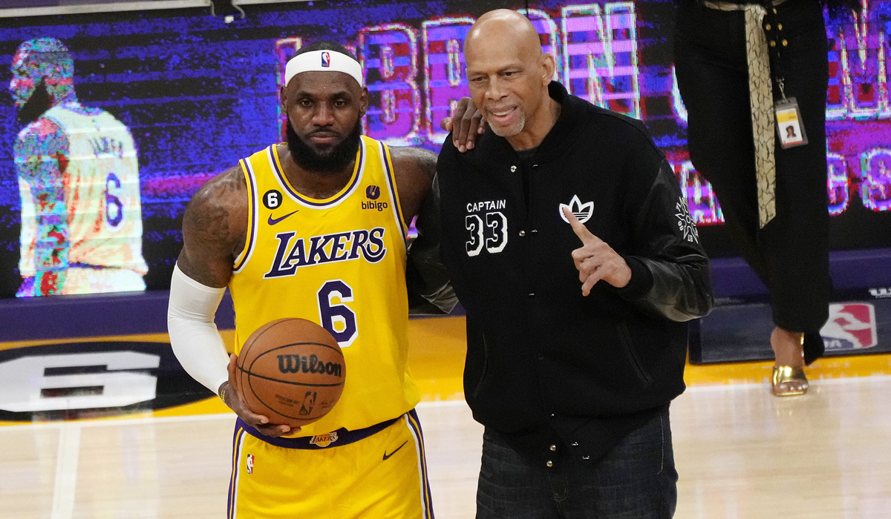

Tal y como avanza Adrian Wojnarowski, el equipo de Arizona adquiere a Durant desde los Nets enviando a Brooklyn a Mikal Bridges, Cam Johnson, Jae Crowder, cuatro primeras rondas de Draft y una intercambiada con Brooklyn de 2028. Los Suns además se hacen con los servicios de TJ Warren. Las elecciones de Draft que obtienen los Nets no están protegidas y son de 2023, 2025, 2027 y 2029.
Para la operación, que los de Arizona quieren cerrar cuanto antes, se han dado circunstancias muy favorables. Primero la intención de los Nets de quitarse el problema de que Durant, que ya quiso marcharse en verano, volviera a la carga con su idea de ser traspasado. De hecho tras el traspaso de Kyrie Irving a los Mavs, hubo conversaciones entre el equipo y el jugador. Luego que el jugador tenía a los Suns como una de sus preferencias. Y finalmente la intención de que el nuevo propietario de la franquicia, Mat Ishbia, haya dado el visto bueno a la operación, sobre todo sin perder a jugadores como Chris Paul, DeAndre Ayton o Devin Booker.
Los Suns se deshacen de Mikal Brdges, un jugador de más de 17 puntos por partido, de Jae Crowder, en todas las quinielas de traspaso de los Suns y del prometedor Cameron Johnson, pero adquieren una estrella con la que afrontar un nuevo asalto al título de la NBA.
LeBron James se hizo inmortal el 8 de febrero de 2023. Tras un tercer cuarto ante los Oklahoma City Thunder como mandaban los cánones. Imponente, dominante y mayúsculo, el 'Rey' tocó el firmamento de la NBA. Su tiro desde la media distancia, buscando postear, en una marca de la casa de toda su carrera deportiva. Eterno LeBron para un registro imposible.
Con un tercer cuarto de antología, en el que anotó 16 puntos para superar un récord imposible. Su último tiro desde la media distancia, en una de sus especialidades envió el récord de 38.387 al segundo puesto. Un punto más bastaba. Y el antiguo Staples con gritos de 'MVP' honraban a uno de los gigantes. Jabbar entregaba la pelota, el testigo. Historia de la humanidad en un partido en el que los oro y púpura cayeron por 130-133. En Hollywood, el 'niño de Akron', el 'Elegido', el 'Rey'... se convierte en el máximo anotador de todos los tiempos en la historia de la NBA. Ese chico que ya era una estrella con 17 años pasa a la leyenda, al terreno que sobrepasa a los números, a los títulos. El terreno del "para siempre". LeBron batió a Kareem Abdul-Jabbar con su media distancia y la historia le abraza.